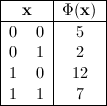
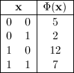
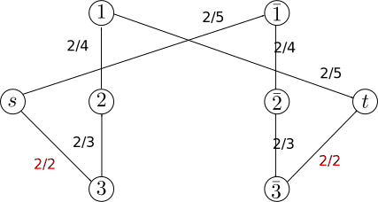
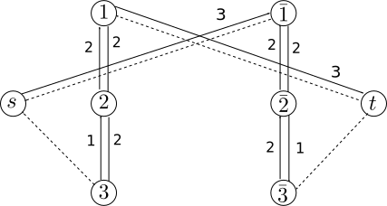

Graph-based algorithms have been used for a decade in many applications for optimization. It produces very good results. First used empirically in image processing, it has been shown that graph-based approach algorithms in image processing are a reduction of optimizing pseudo Boolean function in binary case. In pseudo Boolean optimization, optimizing pseudo Boolean function by reducing the problem to a graph-based algorithm is known for a while. Actually, many interesting properties and algorithms in this field have greatly improved the state of the art algorithms in image processing.
Pseudo Boolean function
A pseudo boolean function has the following form:
\[ f(x_1,...,x_n) = a_0 + \sum_{i=1}^n a_i x_i + \sum_{1\le i \le j \le n} a_{ij}x_{i}x_{j} + \sum_{1\le i \le j \le k \le n} a_{ijk}x_{i}x_{j}x_{k} + ... \]
Where \(x_n\) are Boolean variables and \(a_i\) reals. By introducing the complement \(\bar{x}\), the previous form can be rewritten with only positive coefficents. This form is called posiform. It is generally this form which is minimized.
Optimizing sub-modular function
A special case of pseudo Boolean optimization is when the function is sub-modular (This notion is closely related to convex functions in continuous case). In this case, the global minima can be reached in polynomial time. All pseudo Boolean function can be reduced to a quadratic pseudo Boolean function (a maximum of two variables per term). When the quadratic form is sub-modular, the global minima can be computed with a graph-cut algorithm.
Example : Optimizing quadratic sub-modular function
For example, minimizing the following sub-modular pseudo Boolean function : \(\phi(\textbf{x}) = \overline{x}_1+6x_1+4\overline{x}_2+x_2+ 2x_1\overline{x}_2\) is the same that finding the minimum cut of the graph :
 

Where \(s\) is the source and \(t\) the sink. A edge cut from \(s\) to \(x_i\) means that the variable \(x_i\) is affected to 0. Inversely, \(x\) is affected to 1 when the edge is cut from x to \(t\). A cut is counted only if the tail is on the source side and the head on the sink side. With this formulation, the sum of the edge cut weigh is equal to the cost of the pseudo Boolean function with the previous affectation (see for instance the truth table). In this example, the cut which minimize the sum of the edges cost is \(c2\) (1+1) with \(x_1=0\) and \(x_2=1\). This is the same label set which minimize the pseudo-Boolean function \(\phi(\{1,0\})=2\).
Optimizing non sub-modular function
When a pseudo Boolean function is not sub-modular (or at least cannot be identified as sub-modular), the global minima cannot be reached in polynomial time anymore. However, a subset of label which are guaranteed to belong to the global minima can be computed in polynomial time.
A quadratic pseudo Boolean function can be rewritten with a biggest constant term. The expression when the constant term is maximum is called the roof duality. When the roof duality is reached, the affectation which makes linear terms vanishing are a part of the global minima. A max flow approach can be used (instead of many others) to compute the roof duality and find the subset of affectations which minimize globally the function.
Example : Global subset affectation in general case
This quadratic Boolean function \(\phi(\textbf{x}) = 10x_1 + 8\overline{x}_1x_2 + 6\overline{x}_2x_3 + 4\overline{x}_3 \label{eq:co:1}\) can be transformed to the following \(\phi(\textbf{x}) = 4 + 6x_1 + 4x_1\overline{x}_2 + 4\overline{x}_1x_2 + 2\overline{x}_2x_3 + 4x_2\overline{x}_3 \label{eq:co:4}\) with the same truth table by extracting the constant term \(4\). This can be done using a max flow approach.
 Where \(s\) is the source and \(t\) the sink. The max flow of the graph is equal to the constant term. From this point forward, Once the roof duality is reached, a set of variables which are common to every global minima called strong persistent can be affected to simplify the function by analysing the residual graph. Each node which can be reached from the source of the residual graph can be fixed with \(0\) if the node is the complement bar, otherwise \(1\). In the following examples, the set \(\{0,0,0\}\) is strongly persistent. In this case, the set minimizes globally the solution because \(\phi(\{0,0,0\}) = 4\).
References
For more details, see an introduction to pseudo Boolean function optimization:
- Endre Boros and Peter L. Hammer. 2002. Pseudo-Boolean optimization. Discrete Appl. Math. 123, 1-3 (November 2002), 155-225. DOI=10.1016/S0166-218X(01)00341-9 http://dx.doi.org/10.1016/S0166-218X(01)00341-9